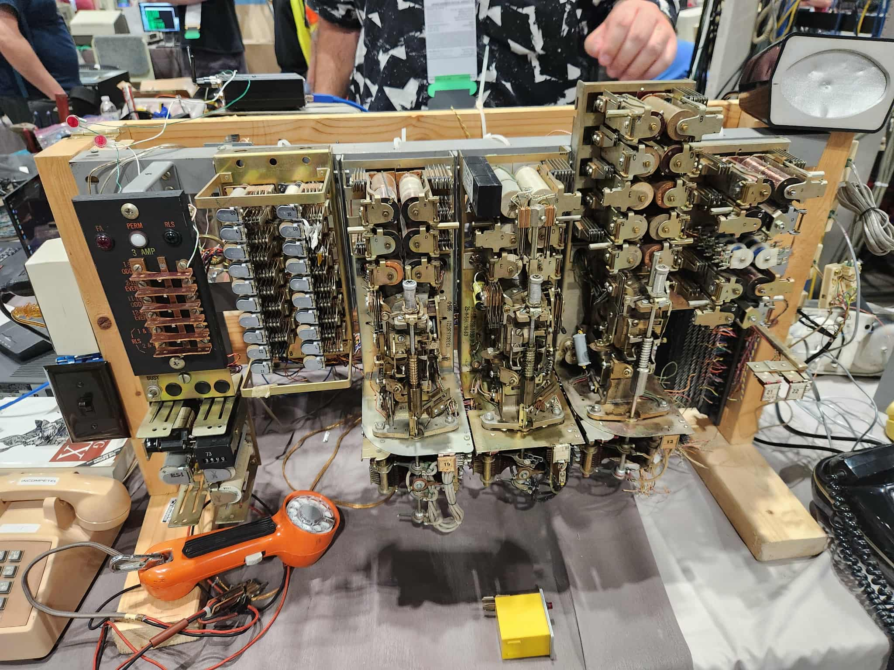
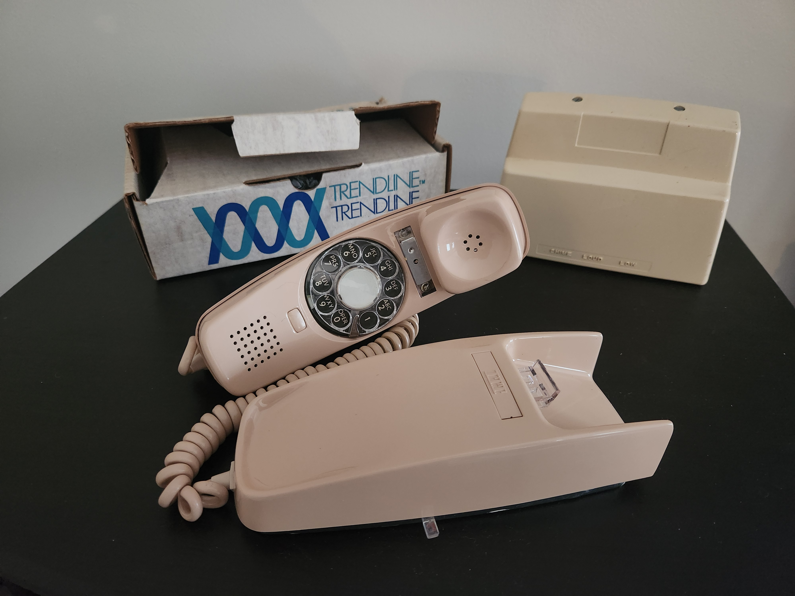

Introduction
The Ma Bell ESP32 Gateway project began after a visit to the Vintage Computer Festival (VCF) Midwest in Chicago in September 2024. One of the exhibits featured a functioning corporate PBX switch system with switch modules from different eras. You could pick up the phone and dial the other extension — just as one did in the old days, complete with the familiar instruction to “dial 9 first for an outside line.” It was a glimpse into the telephone infrastructure that powered everyday communication for decades.
VCF Midwest Exhibit – Inspiration for the Ma Bell Gateway
{kind=link}
Seeing those old phones in action brought back vivid memories of my GenX childhood in the 1970s. The wall-mounted phone in the kitchen, with its super-long cord that could stretch across the room, hung nearby as my mom prepared dinner — the soft orange glow of the illuminated dial lighting her cheek while she stirred Hamburger Helper in the electric skillet. Just below the phone sat the ringer, with its beige plastic case and oversized twin bells, designed to be heard throughout the entire two-story house. Without fail, it would deliver its distinctive “bing… bong” right at 6 o’clock, just as we were sitting down for Mom’s Hamburger Helper dinner.
After returning home, I browsed eBay for fun and wondered if I might find the same phone and ringer we used to have. Amazingly, I found the exact beige ITT Trimline wall phone and a matching Western Electric stand-alone ringer — both in near-perfect condition.
Unboxing a Time Capsule
{kind=link}
After returning home, I browsed eBay for fun and wondered if I might find the same phone and ringer we used to have. Amazingly, I came across a beige ITT Trimline wall phone that matched exactly what I remembered — complete with an illuminated rotary dial — along with a standalone Western Electric ringer, just like the one that sat below our kitchen phone in the 1970s.
Unboxing a Time Capsule
WWhen the box arrived, it felt like opening a piece of suspended time. The phone was still wrapped in its original factory plastic — untouched since it was packaged in September 1982, as marked on the ink-stamped label on the side: “25413/BA/30M — BEIGE 9/82 WALL RR.” The coiled cord was neatly bound, the yet to be lit illumincated rotary dial clear and smooth, and the plastic carried that distinct, slightly sweet vintage electronics smell.
On the handset cradle, there was an empty label panel where the phone company would have placed the customer’s number. But this phone never got its home or its number. It has been waiting more than forty years for its first call that has yet to come, but I can fix that!
The Western Electric ringer was equally familiar — a heavy, standalone unit with a durable beige shell and large twin bells, built to cut through the noise of a busy household. It looked ready to ring again.
Could I build my own device to bring this new-old phone a chance at life?
Of course, there are already devices on the market that let vintage telephones connect to modern Bluetooth systems. But as a software developer with a growing interest in embedded systems and electronics, I wanted something more than just functional — I wanted to build this device myself as an educational journey into both the inner workings of the original telephone service and the expanding skillset of a hobbyist electronics engineer, embedded software developer, and maker. This project would demand skills across all these areas.
Could I build something that rings, lights up, dials, and behaves exactly as it did in its heyday — replicating not just the signals but the entire experience?
That question evolved into a full embedded systems design and implementation challenge: one that would bridge mid-century analog hardware with modern digital tech, while staying faithful to the look, feel, and behavior of the original system.
At a high level, the project requires:
Selecting a microcontroller capable of handling Bluetooth audio (HFP), real-time signaling, and GPIO control. The ESP32-WROVER-IE was chosen for its robust feature set and community support.
Designing analog and digital circuits to simulate the phone company’s central office — including loop current, ringing voltage, tone generation, and rotary pulse decoding.
Developing custom PCBs to integrate power management, signal conditioning, audio routing, and isolation in a compact, reliable form.
Prototyping and validating each subsystem, from ringer triggering to audio passthrough and dial tone playback.
Designing a rack-mountable or wall-mountable enclosure, with standard RJ-11 ports and clearly labeled indicators.
What began as a nostalgic side project became a multi-disciplinary engineering effort — blending firmware, circuit design, mechanical design, and a deep respect for the phone system that connected generations.
This documentation walks through the journey from idea to fully operational gateway.